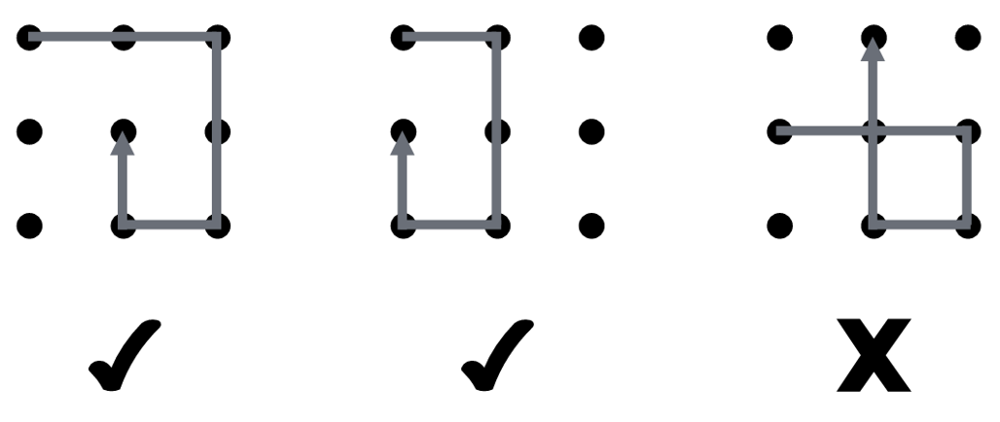

After working for several months at Cafebazaar, Farhad became rich enough to buy a house in the valley of the rich. There he met Shirin several times. Now, he is considering proposing to her whether she would marry him. To surprise her, he wants to install an application on her phone that pops up at the exact right time and asks if she would marry him.
However, to install the application secretly, he needs her password which he unfortunately does not have. He knows her password is a poly-line consisting of vertical or horizontal line segments. Each line segment connects the center of two cells in a $3 \times 3$ grid. Looking at her hand while she unlocked her phone, Farhad learned the direction of each line segment. However, he was too distracted to also learn the length of each segment. He also knows that her phone's operating system does not allow the poly-line to intersect with itself even in one point.
Farhad wants to distract Shirin long enough to try all possible patterns given what he already knows. Unfortunately, he has no idea how long that will take. That is why, he has now turned to you for help. Help him by writing a program that calculates the total number of possible password patterns given the direction of the line segments. The following figure depicts two valid and one invalid patterns given the line segments were directed towards right, down, left, and up in order.

In the only line of the input, a single string is given consisting of
characters R, U, L, and
D which represent a line segment toward right, up, left, and
down, respectively. The length of this string is at most 10. Every two
consecutive characters is guaranteed to be different.
In the only line of the output, print the number of patterns satisfying Farhad's knowledge of the password. Note that this number might be zero.